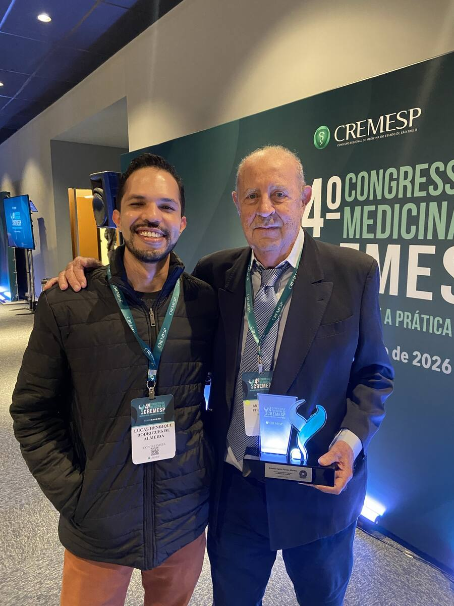

Obesidade como doença, semaglutida em estudo no SUS, o limite sanitário da T36 e a autoridade humana na cadeia que transforma possibilidade em cuidado.
Edição 20.09.2026Semana 13–20 set 2026Autoria Dr Lucas HR AlmeidaEdição verificadaHUMAN-GATE
Editorial
O que esta semana realmente colocou em jogo
A questão comum não é a novidade tecnológica. É o caminho entre possibilidade, regulação e cuidado responsável.
A mesma semana colocou lado a lado movimentos que parecem independentes, mas descrevem uma questão comum: quem decide quando uma tecnologia está pronta para entrar no cuidado — e com quais garantias?
O fio da semana não é a tecnologia em si. É a qualidade da cadeia que transforma possibilidade em cuidado.

40º Congresso do CREMESP, 2026. À esquerda, Dr Lucas HR Almeida. À direita, o Prof. Antônio Carlos Pereira Martins, homenageado no congresso e primeiro transplantador renal com doador cadáver na FMRP-USP.
Antes das “canetas”: do que estamos tratando quando falamos em obesidade?
O vocabulário importa porque ele pode reduzir uma doença sistêmica a uma questão cosmética de peso.
Chamá-las de “canetas emagrecedoras” é um enquadramento insuficiente para política de saúde. O objeto em discussão é o tratamento farmacológico da obesidade, uma doença crônica, recidivante e sistêmica associada ao excesso ou à disfunção do tecido adiposo, com repercussões metabólicas, cardiovasculares, mecânicas, funcionais e inflamatórias.
O tecido adiposo é metabolicamente ativo. IMC continua útil como ferramenta epidemiológica e de triagem, mas não descreve composição corporal, distribuição da adiposidade nem dano orgânico.
Isso muda a pergunta sobre agonistas incretínicos. Se obesidade fosse apenas excesso de peso, bastaria discutir quantos quilos se perdem. Quando reconhecida como doença sistêmica, a pergunta correta é: em quais pacientes o tratamento modifica doença, complicações, função, risco cardiovascular e trajetória clínica — e a que custo, risco e necessidade de acompanhamento?
01 · Acesso e regulação
Medicamentos para obesidade no SUS: o anúncio chegou antes da incorporação
A promessa é relevante. O fato regulatório ainda é estudo, avaliação de tecnologia e definição de protocolo.
Em 17 de setembro, durante agenda em Montes Claros, o Ministério da Saúde apresentou a futura oferta de medicamentos para obesidade no SUS como um direito a ser construído de forma responsável. O comunicado oficial descreve avaliação, estudo em andamento e preparação de protocolo — não uma incorporação já concluída.
Entre as iniciativas citadas está o Real-Bari, no Grupo Hospitalar Conceição, que deverá acompanhar 250 pacientes. Um resultado individual, como a perda ponderal já divulgada de um participante, é anedota clínica; não é evidência suficiente para uma política nacional.
Contraponto · T36
Em 16 de setembro, a Anvisa proibiu importação, armazenamento, distribuição, comercialização, propaganda e uso da T36. O produto não possui registro sanitário no Brasil e não teve segurança e eficácia avaliadas pela Agência.
Nem acesso sem regulação, nem regulação indiferente ao problema de acesso.
No Hub · não é matéria da semana
Mover o corpo sem passar no tribunal
O mesmo reframe da abertura vale aqui. Hábito não é penitência. Dia sem movimento não é falha moral. A ferramenta oferece; o humano segura o HOLD.
HUMAN_GATE — yield para quem paga a conta · iniciativa sem voluntarismo · pedagogia do erro.
O que esta caixa não faz
Não conta streak punitivo. Não transforma IMC em nota. Não chama ninguém de sedentário. Não prescreve treino, dieta nem fármaco. Não é SaMD.
Se quiser, hoje
CaminharSair. Voltar. Sem meta de passos como sentença.
PararHOLD. A ferramenta cala. Quem paga a conta decide o próximo ato.
Anotar o que aconteceuErro e interrupção entram como matéria, não como culpa.
Reframe
Incentivo ≠ julgamento. Acelerar o hábito só vale se a etapa que descobre o excesso — dor, risco, recusa — continuar no caminho.
Hub · aula · não é matéria da semana
Engenharia epistêmica
Frameworks para otimizar respostas de IA sem subordinar o clínico ao contexto que só parece inteligente. Canal Lucas HR (MD), 02/05/2026.
Vídeo do autor: https://youtu.be/5XiIHabeIck
Por que está aqui
Cruza o item 04 da edição (saber quando não decidir) com o bloco *Aos que ensinam*. Não disputa capa com GLP-1 nem com sarampo.
O ensaio vizinho no Substack é *A Máquina Não Pensa. Mas Decide.* (28/03/2026). O vídeo não foi amarrado a um post único nesta passada.
Yield do embed
youtube-nocookie. Ainda assim o player é superfície de terceiro. Quem não quiser o iframe usa o link. Legenda automática do YouTube ≠ legenda editorial da VIA.
O que fica da semana
Anunciar acesso não é incorporar uma tecnologia.
Autorizar ou estudar uma tecnologia não é demonstrar benefício em qualquer população.
Um modelo capaz de responder não é necessariamente capaz de reconhecer quando não deveria responder.
Acelerar um processo regulatório só é avanço se a velocidade não apagar as etapas que existem para descobrir quando estamos errados.
Ciência e tecnologia entram no cuidado por uma cadeia de decisões. A qualidade dessa cadeia talvez importe tanto quanto a novidade que circula por ela.
Nota de método
Fatos regulatórios e institucionais foram conferidos em fontes primárias. Declaração ministerial, protocolo de pesquisa, decisão de incorporação e autorização sanitária são categorias distintas. A edição preserva essa separação.